data(airquality)Missing data
Learning goals
After this lesson, you should be able to:
- Explain the difference between MCAR, MAR, and MNAR missing data mechanisms
- Assess what missing data mechanisms might be at play in a given dataset
- Use visualizations to explore missing data patterns
- Explain why multiple imputation is preferred to single imputation
- Explain how a simulation study can be used to investigate properties of statistical methods
You can download a template Quarto file to start from here. Put this file in a folder called missing_data within a folder for this course. Install the naniar and mice packages.
Approaches to working with missing data
If you have missing data, there are 3 main ways of proceeding:
- Drop the cases with missing data from the analysis–a complete case analysis
- For some variables, a missing value might be meaningful itself in a category.
- Example: The survey question “What is your gender?” might only provide two responses: “male” and “female”. Missing values for this could indicate that the respondent uses a non-binary designation. Instead of dropping these cases, treating the missing data as its own category (“Not male or female”) could be more appropriate.
- Impute (fill in) the missing data using imputation algorithms.
- Imputation algorithms can be as simple as replacing missing values with the mean of the non-missing values.
- More sophisticated imputation algorithms use models to predict missing values as a function of other variables in the data.
Deciding between these 3 options and proceeding with choosing finer details within an option requires an understanding of the mechanism by which data become missing.
Missing data mechanisms
The reasons for which a variable might have missing data are divided into 3 mechanisms: MCAR, MAR, and MNAR. Within a dataset, multiple mechanisms may be present–we need to consider the missingness mechanism for each variable individually.
- Missing completely at random (MCAR):
- The probability of missing data for a variable is the same for all cases. Implies that causes of the missing data are unrelated to the data. (https://stefvanbuuren.name/fimd/sec-MCAR.html)
- Examples:
- Measurement device that runs out of batteries causes the remainder of observations for the day to be missing.
- Data entry software requires a particular field to be typo-free, and missing values are introduced when there are typos.
- Implications for downstream work:
- If a variable has MCAR missingness, a complete case analysis will be unbiased.
- However, with a lot of missing observations, a complete case analysis will suffer from loss of statistical power, and imputation will be useful to retain the original sample size.
- Missing at random (MAR):
- The probability of missing data is related to observed variables but unrelated to unobserved information.
- Examples:
- Blood pressure measurements tend to be missing in patients in worse health. (Those in worse health are more likely to miss clinic visits.) Better and worse health can be measured by a variety of indicators in their health record.
- In a survey, older people are more likely to report their income than younger people. Missingness is related to the observed age variable, but not to unobserved information.
- Implications for downstream work:
- Try to use imputation methods that predict the value of the missing variables from other observed variables. Assessing whether this can be done accurately takes some exploration–we’ll explore this shortly.
- Missing not at random (MNAR):
- The probability of missing data is related to unobserved variables (and probably observed variables too).
- Examples:
- Blood pressure measurements are more likely to be missing for those with the highest blood pressure. This is MNAR rather than MAR because the missing data on blood pressure is related to the unobserved values themselves.
- High-income individuals may be less likely to report their income.
- Implications for downstream work:
- Ideally, we would learn more about the causes for the missingness. This could allow us to use more informed imputation models.
- Example: In my work, I deal with biological measurements that tend to be missing because of concentrations that are too low (a phenomenon known as left-censoring). Imputation methods specifically suited to left-censoring are useful here.
- We can use imputation methods with different assumptions about the missing data and try out a variety of assumptions. This lets us see how sensitive the results are under various scenarios.
- Example: If higher incomes are more likely to be missing, we can make different assumptions about what “high” could be to fill in the missing values and see how our results change under these different assumptions.
- Ideally, we would learn more about the causes for the missingness. This could allow us to use more informed imputation models.
Exercise
For each of the following situations, propose what missing data mechanism you think is most likely at play.
- In a clinical trial, some patients dropped out before the end of the study. Their reasons for dropping out were not recorded.
- A weather station records temperature, humidity, and wind speed every hour. Some of the recorded values are missing.
- A social media platform collects data on user interactions, such as likes, comments, and shares. Some interactions are not recorded due to bugs in the code.
Responses
A variety of responses would be reasonable here:
MNAR probably: The chance of missingness is likely due to factors that aren’t recorded (like discomfort).
Could be MCAR if the missing values are from technical glitches. Could be MAR if the missing values are related to other measured weather variables. Could be MNAR if the values tend to be missing when the values themselves are high (e.g., high temperature, humidity, and wind speed causing measurement devices to malfunction).
Could be MCAR if the bugs affected the platform uniformly. Could be MAR if the bugs affected groups of users differently, but where the groupings are known (e.g., bugs affect mobile users more and mobile vs. desktop usage is measurable). Could be MNAR if the bugs lead to performance issues that affect users with slower internet more (where internet speed is likely not measured).
Exploring missing data
Guiding question: How can we use visualizations and tabulations to explore what missing data mechanisms may be at play?
We’ll look at the airquality dataset available in base R, which gives daily air quality measurements in New York from May to September 1973. You can pull up the codebook with ?airquality in the Console.
Missingness by variable
We can explore how much missingness there is for each variable with the following functions:
summary(airquality) # Summary statistics in addition to number of NA's Ozone Solar.R Wind Temp
Min. : 1.00 Min. : 7.0 Min. : 1.700 Min. :56.00
1st Qu.: 18.00 1st Qu.:115.8 1st Qu.: 7.400 1st Qu.:72.00
Median : 31.50 Median :205.0 Median : 9.700 Median :79.00
Mean : 42.13 Mean :185.9 Mean : 9.958 Mean :77.88
3rd Qu.: 63.25 3rd Qu.:258.8 3rd Qu.:11.500 3rd Qu.:85.00
Max. :168.00 Max. :334.0 Max. :20.700 Max. :97.00
NA's :37 NA's :7
Month Day
Min. :5.000 Min. : 1.0
1st Qu.:6.000 1st Qu.: 8.0
Median :7.000 Median :16.0
Mean :6.993 Mean :15.8
3rd Qu.:8.000 3rd Qu.:23.0
Max. :9.000 Max. :31.0
naniar::vis_miss(airquality) # In what rows are NA's located?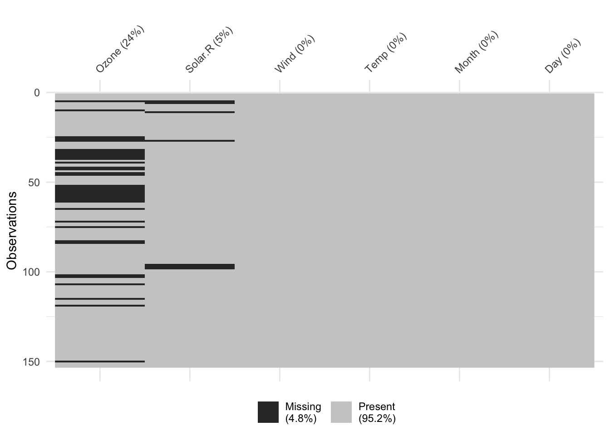
naniar::miss_var_summary(airquality) # Information from vis_miss() in table form# A tibble: 6 × 3
variable n_miss pct_miss
<chr> <int> <dbl>
1 Ozone 37 24.2
2 Solar.R 7 4.58
3 Wind 0 0
4 Temp 0 0
5 Month 0 0
6 Day 0 0 Missingness by case
We can explore how much missingness there is for each case with miss_case_summary(). For each case, this function calculates the number and percentage of variables with a missing value. If the pct_miss column is large for a case, we likely won’t be able to impute any of its missing values because there just isn’t enough known information–this case will have to be dropped from the analysis.
miss_case_summary(airquality)# A tibble: 153 × 3
case n_miss pct_miss
<int> <int> <dbl>
1 5 2 33.3
2 27 2 33.3
3 6 1 16.7
4 10 1 16.7
5 11 1 16.7
6 25 1 16.7
7 26 1 16.7
8 32 1 16.7
9 33 1 16.7
10 34 1 16.7
# ℹ 143 more rowsExploring missingness mechanisms
Assessing missingness mechanisms involves checking if missingness in a variable is related to other variables. Through our available data, we are really only able to explore the potential for MCAR or MAR mechanisms. There is always the chance that unobserved information (unobserved other variables or unobserved values of the variables we do have) is related to missingness for our variables, so to think through the potential for MNAR, more contextual information is necessary.
To explore these relationships, we can create TRUE/FALSE indicators of whether a variable is missing. In the plots below, we use is.na(Ozone) to explore whether cases with missing ozone values are noticeably different from cases with observed ozone values in terms of Solar.R.
ggplot(airquality, aes(x = is.na(Ozone), y = Solar.R)) +
geom_boxplot()Warning: Removed 7 rows containing non-finite values (`stat_boxplot()`).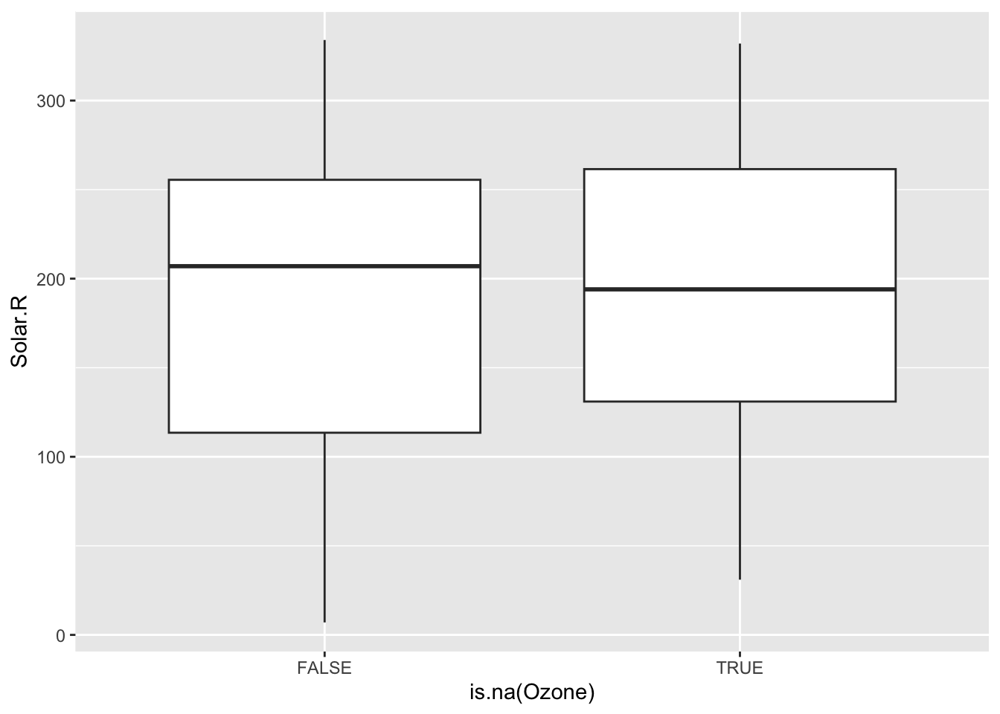
ggplot(airquality, aes(x = Solar.R, color = is.na(Ozone))) +
geom_density()Warning: Removed 7 rows containing non-finite values (`stat_density()`).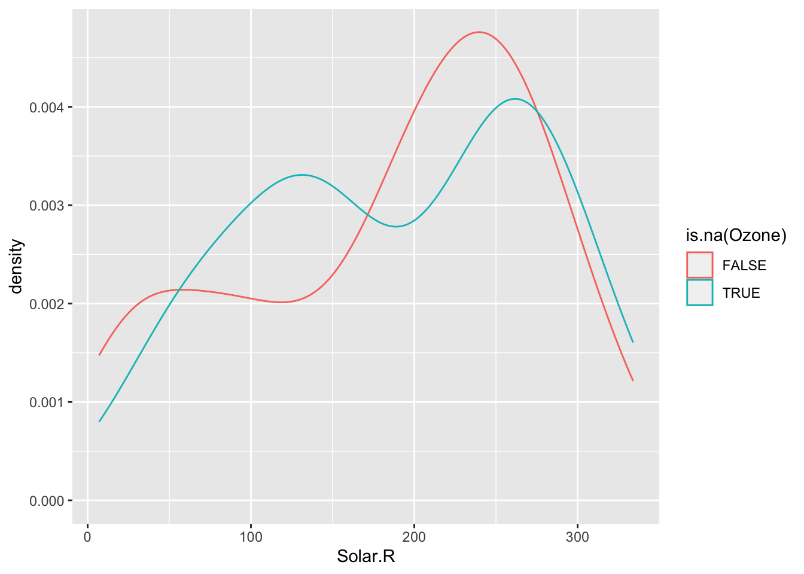
The above boxplots and density plots suggest that missing ozone is not strongly related to solar radiation levels. We still should check if ozone missingness is related to the Wind, Temp, Month, and Day variables (to be done in Exercises).
In addition to checking if the chance of ozone missingness is related to Solar.R, we should check if the values of ozone could be predicted by Solar.R. In the scaterrplot below, we look at the relationship between Ozone and Solar.R and use vertical lines to indicate the Solar.R values for cases that are missing Ozone.
- We see that missing
Ozonecases are within the observed span ofSolar.R, so we would be ok with predictingOzonefromSolar.Rbecause there would be no extrapolation.
ggplot(airquality, aes(x = Solar.R, y = Ozone)) +
geom_point() +
geom_smooth() +
geom_vline(data = airquality %>% filter(is.na(Ozone)), mapping = aes(xintercept = Solar.R))`geom_smooth()` using method = 'loess' and formula = 'y ~ x'Warning: Removed 42 rows containing non-finite values (`stat_smooth()`).Warning: Removed 42 rows containing missing values (`geom_point()`).Warning: Removed 2 rows containing missing values (`geom_vline()`).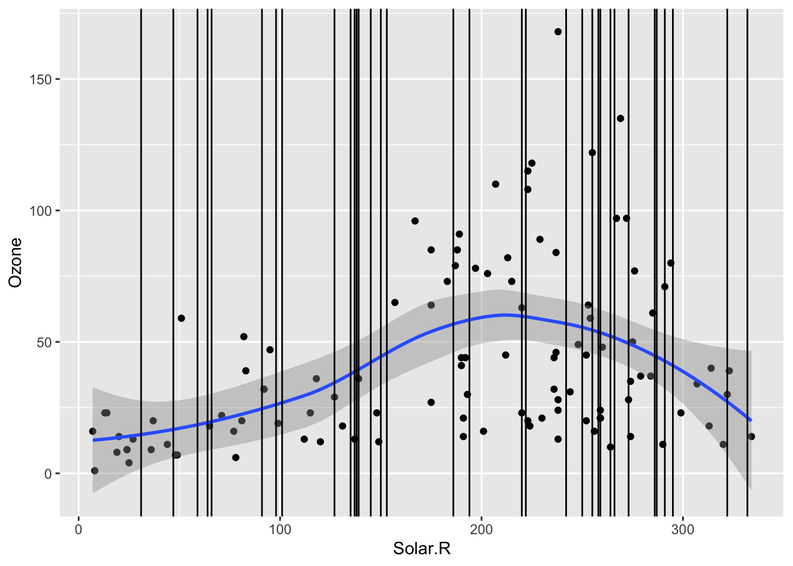
Mini-exercise: Look at the boxplot+scatterplot pairs for Alternate Situations 1 and 2 below. How do these situations compare to our actual situation and to each other? What concerns might arise from using a model to impute Ozone?
airquality_mod <- airquality %>%
mutate(
Solar.R_mod1 = if_else(is.na(Ozone), 250+Solar.R/4, Solar.R),
Solar.R_mod2 = if_else(is.na(Ozone), 250+Solar.R/2, Solar.R)
)
ggplot(airquality_mod, aes(x = is.na(Ozone), y = Solar.R_mod1)) +
geom_boxplot() +
labs(title = "Alternate Situation 1")Warning: Removed 7 rows containing non-finite values (`stat_boxplot()`).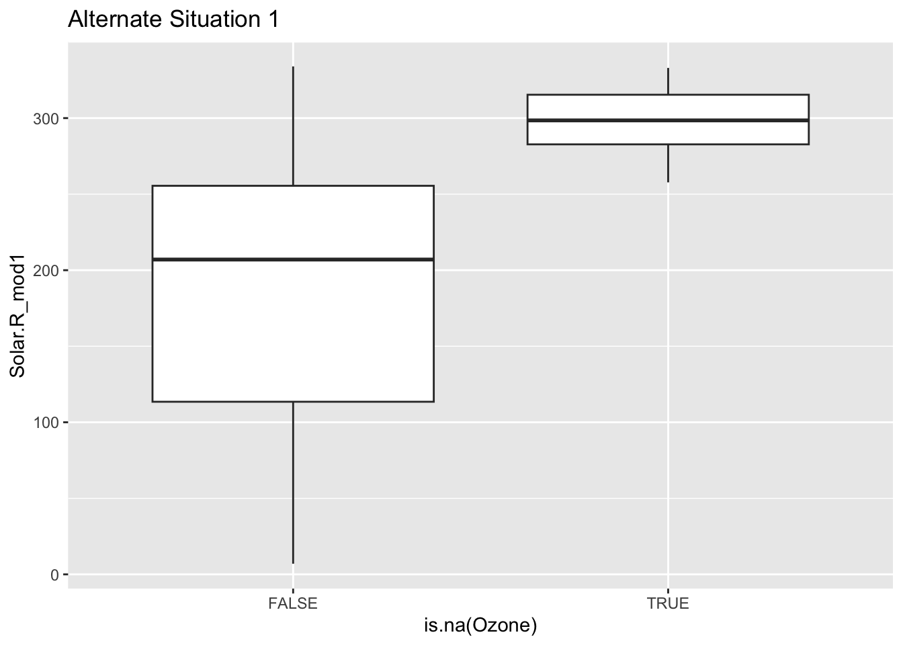
ggplot(airquality_mod, aes(x = Solar.R_mod1, y = Ozone)) +
geom_point() +
geom_smooth() +
geom_vline(data = airquality_mod %>% filter(is.na(Ozone)), mapping = aes(xintercept = Solar.R_mod1)) +
labs(title = "Alternate Situation 1")`geom_smooth()` using method = 'loess' and formula = 'y ~ x'Warning: Removed 42 rows containing non-finite values (`stat_smooth()`).Warning: Removed 42 rows containing missing values (`geom_point()`).Warning: Removed 2 rows containing missing values (`geom_vline()`).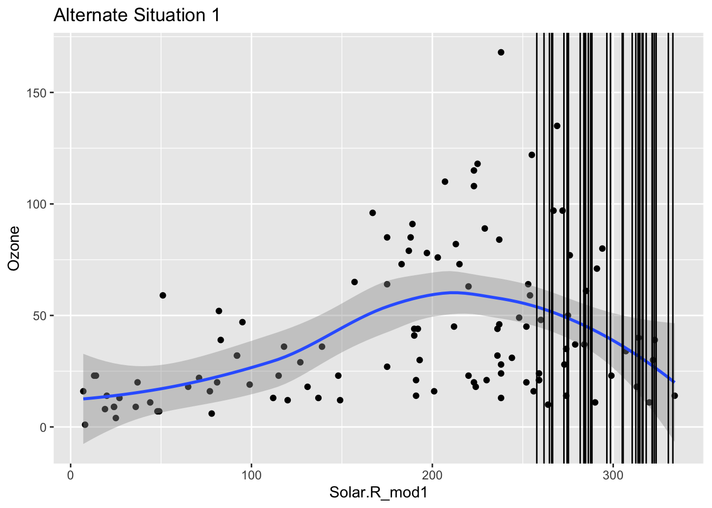
ggplot(airquality_mod, aes(x = is.na(Ozone), y = Solar.R_mod2)) +
geom_boxplot() +
labs(title = "Alternate Situation 2")Warning: Removed 7 rows containing non-finite values (`stat_boxplot()`).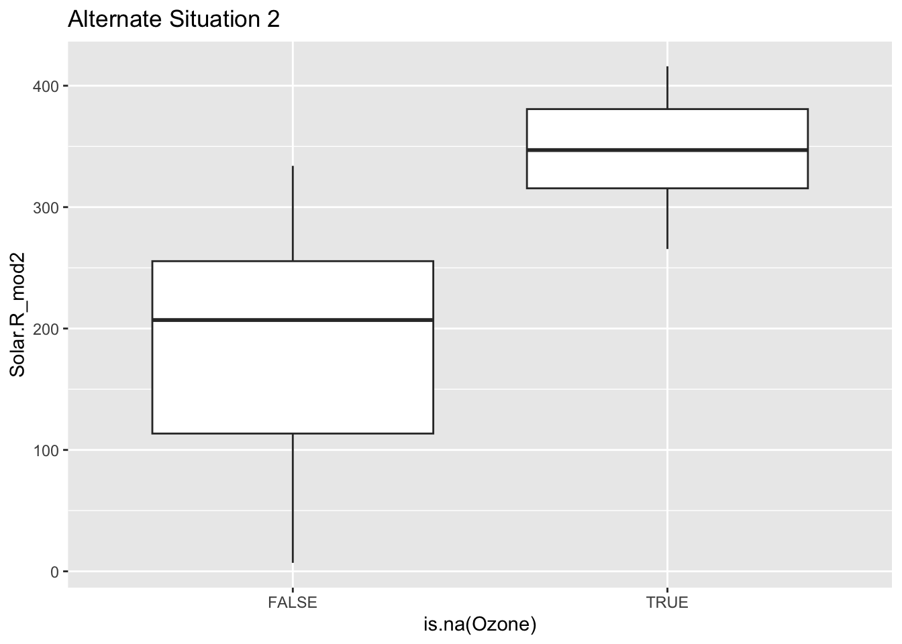
ggplot(airquality_mod, aes(x = Solar.R_mod2, y = Ozone)) +
geom_point() +
geom_smooth() +
geom_vline(data = airquality_mod %>% filter(is.na(Ozone)), mapping = aes(xintercept = Solar.R_mod2)) +
labs(title = "Alternate Situation 2")`geom_smooth()` using method = 'loess' and formula = 'y ~ x'Warning: Removed 42 rows containing non-finite values (`stat_smooth()`).Warning: Removed 42 rows containing missing values (`geom_point()`).Warning: Removed 2 rows containing missing values (`geom_vline()`).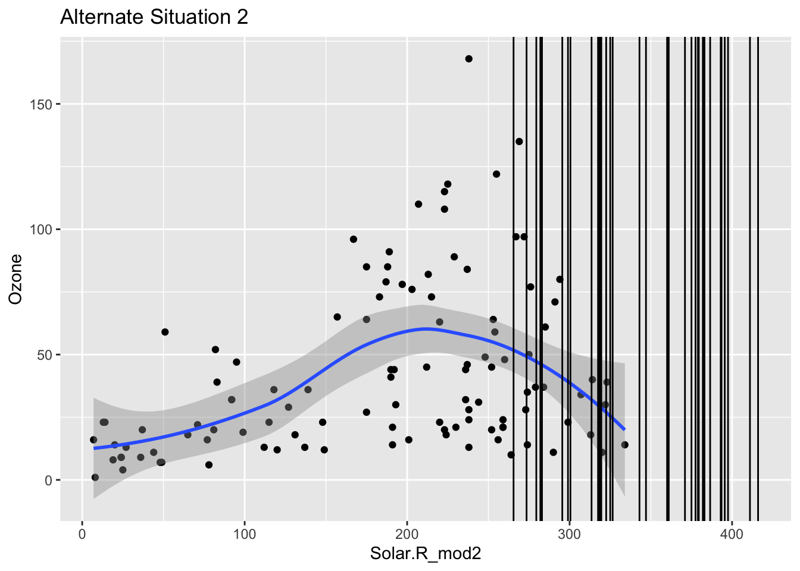
Exercise
Continue the investigation of missingness for Ozone. We want to see how Month, Wind, and Temp relate to the chance of missingness for Ozone and to the value of Ozone.
Does it look like a linear regression model (perhaps with variable transformations) could be effective in imputing the missing ozone data?
Solution
ggplot(airquality, aes(fill = is.na(Ozone), x = factor(Month))) +
geom_bar(position = "fill")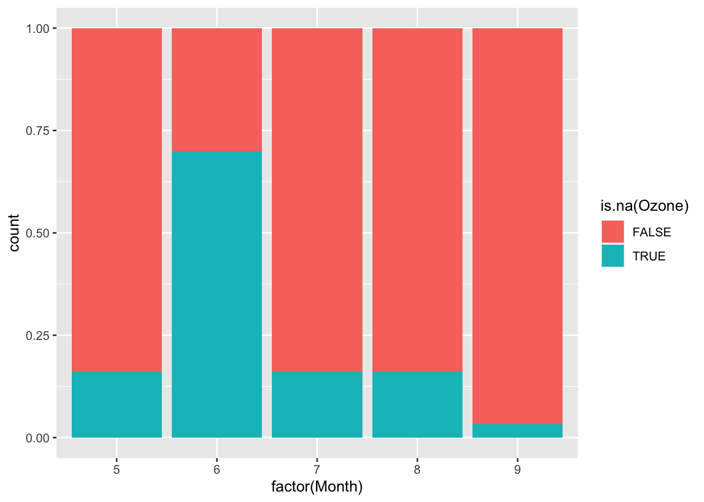
ggplot(airquality, aes(x = is.na(Ozone), y = Wind)) +
geom_boxplot()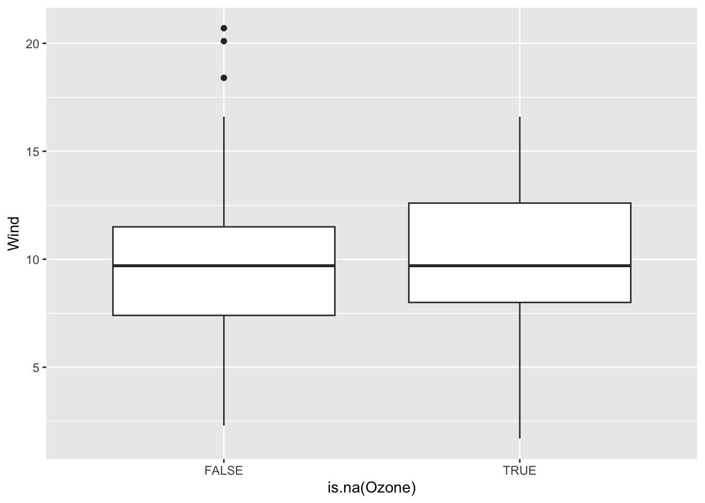
ggplot(airquality, aes(x = is.na(Ozone), y = Temp)) +
geom_boxplot()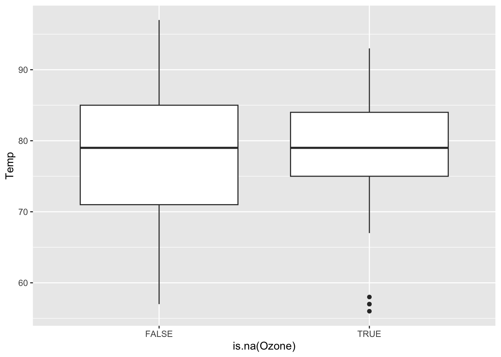
ggplot(airquality, aes(x = factor(Month), y = Ozone)) +
geom_boxplot()Warning: Removed 37 rows containing non-finite values (`stat_boxplot()`).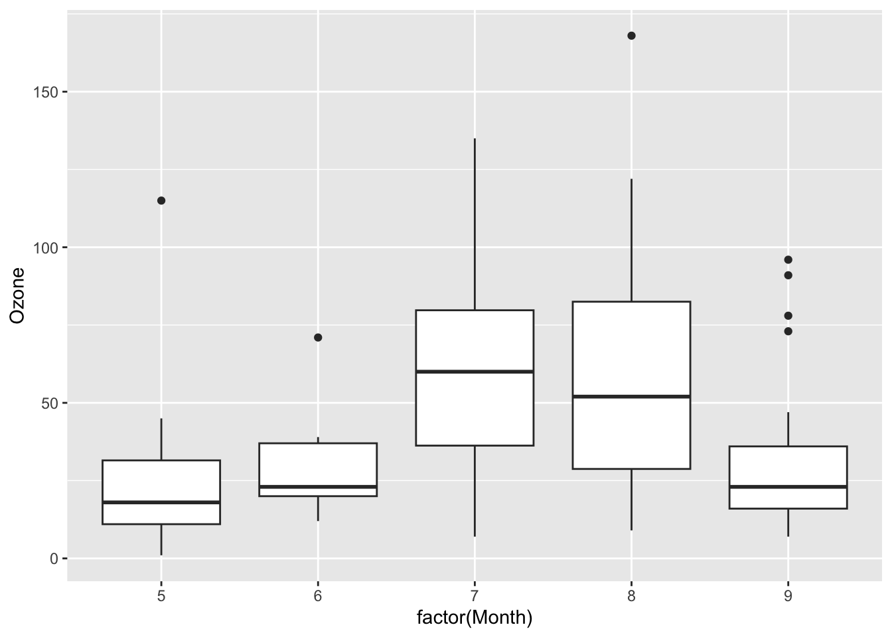
ggplot(airquality, aes(x = Wind, y = Ozone)) +
geom_point() +
geom_smooth() +
geom_vline(data = airquality %>% filter(is.na(Ozone)), mapping = aes(xintercept = Wind))`geom_smooth()` using method = 'loess' and formula = 'y ~ x'Warning: Removed 37 rows containing non-finite values (`stat_smooth()`).Warning: Removed 37 rows containing missing values (`geom_point()`).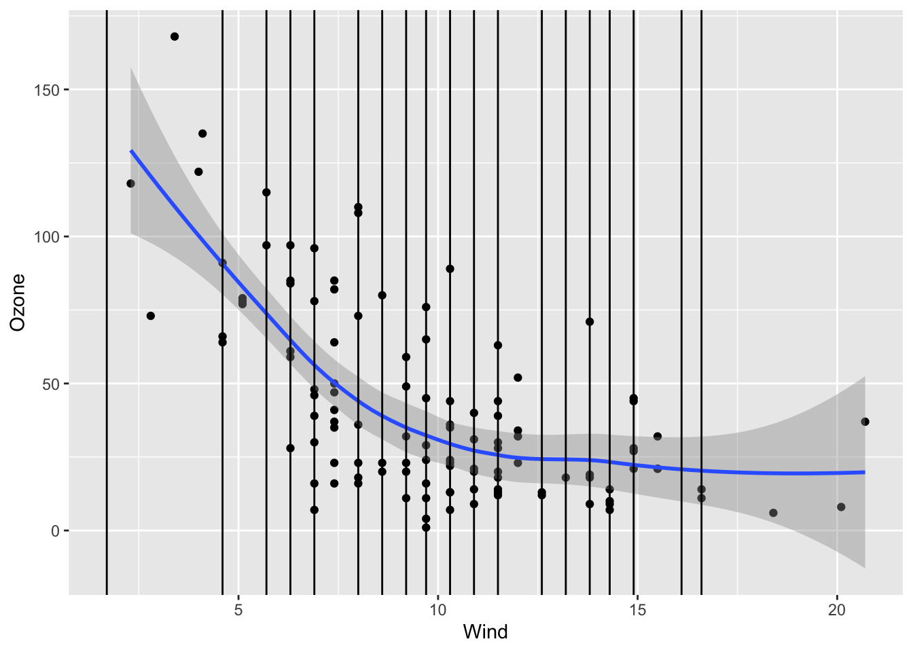
ggplot(airquality, aes(x = Temp, y = Ozone)) +
geom_point() +
geom_smooth() +
geom_vline(data = airquality %>% filter(is.na(Ozone)), mapping = aes(xintercept = Temp))`geom_smooth()` using method = 'loess' and formula = 'y ~ x'Warning: Removed 37 rows containing non-finite values (`stat_smooth()`).
Removed 37 rows containing missing values (`geom_point()`).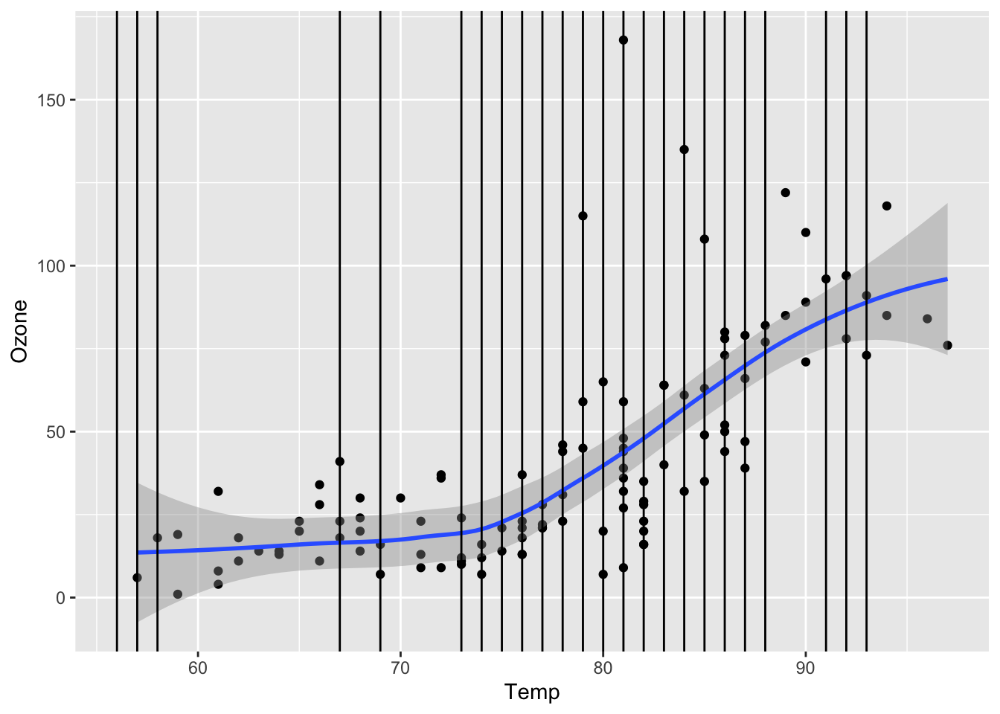
Multiple imputation and simulation studies
When a model is built and used to generate a single set of predictions for missing values, this is known as single imputation. When using singly imputed data in subsequent modeling, the uncertainty in estimates tends to be underestimated. This means that:
- Standard errors are lower than they should be.
- Confidence intervals won’t contain the true parameter value the “advertised” percentage of times
- e.g., 95% confidence intervals will not contain the truth in 95% of samples–the coverage probability will be less than 95%
In multiple imputation, multiple imputed datasets are generated with different values for the filled-in data. Subsequent models are fit on each of these datasets, and both estimates and uncertainty measures are pooled across all of these fits. Multiple imputation more accurately estimates uncertainty measures.
We can use a simulation study to investigate the statistical properties described above.
- Generate (simulate) data where we are in control of missing data mechanisms and the true relationship between an outcome and the predictors.
- On that simulated data, use single imputation to fill in the missing values. Fit the desired model, and obtain a confidence interval for a coefficient of interest.
- On that simulated data, use multiple imputation to fill in the missing values. Fit the desired models on all imputed datasets, pool results, and obtain a confidence interval for a coefficient of interest.
- Steps 1 - 3 are repeated a lot of times (
num_simulations >= 1000) to see how things work out in lots of different samples. - Summarize the performance of single and multiple imputation across the
num_simulationssimulations.
We will slowly step through the simulation study code below. We will pause frequently for you to add comments documenting what is happening. You’ll be reorganizing and adding to the code below in a future homework Challenge.
set.seed(224)
num_simulations <- 1000
ci_list <- vector("list", length = num_simulations)
system.time({
for (i in 1:num_simulations) {
# Simulate data
n <- 1000
sim_data <- tibble(
x1 = runif(n, min = 0, max = 1),
x2 = x1 + rnorm(n, mean = 0, sd = 1),
x2_miss_bool = rbinom(n, size = 1, prob = x1/2),
x2_NA = if_else(x2_miss_bool==1, NA, x2),
y = x1 + x2 + rnorm(n, mean = 0, sd = 1)
)
# Single imputation ---------------
mice_obj <- mice(sim_data %>% select(x1, x2_NA, y), m = 1, method = "norm", printFlag = FALSE)
si_mod <- with(mice_obj, lm(y ~ x1+x2_NA))
ci_single <- si_mod$analyses[[1]] %>% confint(level = 0.95)
ci_single <- ci_single["x2_NA",]
# Multiple imputation -------------
mice_obj <- mice(sim_data %>% select(x1, x2_NA, y), m = 10, method = "norm", printFlag = FALSE)
mi_mods <- with(mice_obj, lm(y ~ x1+x2_NA))
pooled_res <- pool(mi_mods)
summ_pooled_res <- summary(pooled_res, conf.int = TRUE, conf.level = 0.95)
ci_multiple_lower <- summ_pooled_res %>% filter(term=="x2_NA") %>% pull(`2.5 %`)
ci_multiple_upper <- summ_pooled_res %>% filter(term=="x2_NA") %>% pull(`97.5 %`)
# Store CI information
ci_list[[i]] <- tibble(
ci_lower = c(
ci_single[1],
ci_multiple_lower
),
ci_upper = c(
ci_single[2],
ci_multiple_upper
),
which_imp = c("single", "multiple")
)
}
})Below we compute the confidence interval (CI) coverage probability (fraction of times the CI contains the true value of 1) for the CIs generated from single and multiple imputation:
ci_data <- bind_rows(ci_list)
ci_data %>%
mutate(contains_truth = ci_lower < 1 & ci_upper > 1) %>%
group_by(which_imp) %>%
summarize(frac_contains_truth = mean(contains_truth))Reflection
What were the challenges and successes of today? What resources do you need to take the next steps in your understanding of the ideas today? Record observations in your personal class journal.
Announcements
- Work on Homework 5 due next Monday.
- Wrangling+Functions Challenge 1
- Project Milestone 2–see Project page for details.
- Check our Schedule for two readings to prepare for Thursday (Functions and Control Structures).
- We will be forming random pairings starting Thursday for the class sessions up to Spring Break. Why?
- The content coming up (Functions, Loops) is a great space for pair programming. You will learn a lot from experiencing others’ coding practices.
- Reflect on how you function in this type of environment. What about the partnership makes it one where you can learn the most and where your partner can learn the most? What can you do to prepare now to make that environment a reality on Thursday?
References
- The
naniarpackage provides a variety of functions for exploring missing data through visualizations and tabulations. - Flexible Imputation of Missing Data: A free online book about missing data and imputation
- This section digs into missing data mechanisms.
- A chapter on missing data from Andrew Gelman’s online textbook